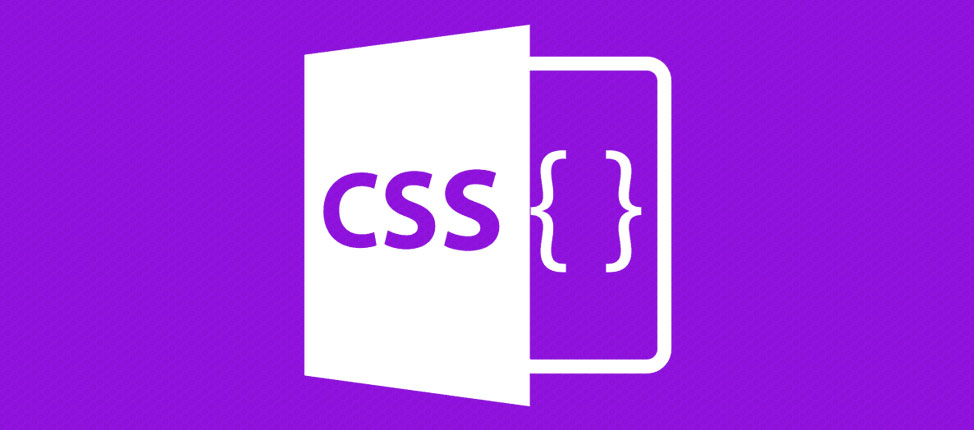

Html, CCS y Perspectiva de genero
HTML
¿Qué es HTML?
Es un lenguaje de marcación que sirve para definir el contenido de las páginas web.
Se compone en base a etiquetas, también llamadas marcas o tags, con las cuales
conseguimos expresar las partes de un documento, cabecera, cuerpo, encabezados,
párrafos, etc. En definitiva, el contenido de una página web.
Etiquetas de HTML
La etiqueta es el elemento básico del código HTML.
Es un bloque de contenido que puede tener naturaleza diversa,
desde un párrafo a una imagen o un vídeo
< head> < /head >
Es información que en principio no aparecerá en el cuerpo de la página,
pero que sirve para saber de qué trata la página, cómo deben interpretarla
los distintos clientes web, etc.
< img > < /img >
Define una imagen
< body> < /body >
Es la información del cuerpo, es decir, lo que se verá en el navegador cuando el usuario entre.
< menu >< /menu >
Define la lista de un menú
< a > < /a >
Crea un enlace a otras páginas de internet, archivos o ubicaciones dentro de la misma página, direcciones de correo, o cualquier otra URL.
Pulsa aquí
< b > < /b >
Indica que el texto debe ser representado con una variable bold,
o negrita, de la tipografía que se esté usando.
Texto normal y... Texto en negrita
< strong > < /strong >
El elemento strong provee importancia, seriedad o urgencia al texto que contiene.
Por lo tanto, se vuelve útil para distinguir la parte importante o seria de un
encabezado o párrafo, o para encerrar texto que el autor necesita que sea leido
primero o con urgencia.
< div > < /div >
es un contenedor genérico sin un significado semántico en particular.
Se utiliza comúnmente en el desarrollo de documentos con propósitos estilísticos,
en conjunto con los atributos style y class.
< figcaption > < /figcaption >
Define el título para una figura
CSS
¿Qué es CSS?
Es lo que se denomina lenguaje de hojas de estilo en cascada
y se usa para estilizar elementos escritos en un lenguaje de marcado como HTML.
CSS separa el contenido de la representación visual del sitio.

Perspectiva de genero
Se refiere a la metodología y los mecanismos que permiten identificar,
cuestionar y valorar la discriminación, desigualdad y exclusión de las mujeres,
que se pretende justificar con base en las diferencias biológicas entre mujeres
y hombres, así como las acciones que deben emprenderse para actuar sobre los factores
de género y crear las condiciones de cambio que permitan avanzar en la construcción de
la igualdad de género.
Primera ola feminista
Surgió a mediados del siglo XVIII, en torno a la polémica
sobre la naturaleza de la mujer y la jerarquía de sexos. Estas pensadoras
indagaron acerca de la educación y los derechos de la mujer. Cuestionaron
los privilegios masculinos afirmando que no son una cuestión biológica y/o
natural. Las autoras de referencia son: Poullain de Barre, Olympe de Gouges
y Mary Wollstonecraft, esta última autora del famoso texto Vindicación de los
derechos de la mujer (1792), un punto de partida fundamental para cambiar el
pensamiento de la época.
Segunda ola feminista
Se dio desde mediados del siglo XIX hasta la década de los
cincuenta del siglo XX. Aborda entre sus puntos principales el derecho al
voto femenino. Es aquí cuando el debate alrededor del sufragio universal se
intensifica (la película Las sufragistas, del año 2015, retrata este momento
en Ingaterra). Además, las mujeres reclaman el acceso a la educación superior,
critican la obligatoriedad del matrimonio y comienzan a liberarse en su aspecto
físico.
Tercera ola feminista
Llegó en la década del sesenta y hay distintas opiniones
respecto a su finalización. Mientras que algunos sostienen que sigue vigente,
otros afirman que finalizó en los años ochenta. Va de las políticas públicas
que reivindican a la mujer hasta el fin del patriarcado. En este movimiento
fueron fundamentales los anticonceptivos porque le otorgaron el poder del
control de la natalidad (y la liberación del goce sexual, no atado a la
reproducción) y el divorcio se hizo ley en muchos países. Caen las vendas
del "amor para toda la vida" y aparecen otras opciones para mujeres rebeldes.
Las mujeres son candidatas reales en el mundo político, aunque su porcentaje
es sensiblemente inferior al de los hombres.
Cuarta ola feminista
Es la que vivimos en la actualidad y donde el activismo presencial
y online cobraron gran protagonismo. Plantea el fin de los privilegios de género
establecidos históricamente hacia el hombre. Asimismo, repudia la violencia de
género establecida en todos los ámbitos de la vida. “Lo personal es político”,
suele leerse de un tiempo a esta parte en las manifestaciones feministas.
La sororidad, concepto que habla de la solidaridad entre mujeres, es central.
En cuestión de derechos, la lucha por el derecho a la interrupción legal del
embarazo aparece aquí como otro punto clave. También aparece con mucha fuerza
el discurso anti estereotipos: nace el feminismo descolonial (contra el predominio
de la raza blanca como modelo de éxito social), el feminismo gordo (contra la
delgadez impuesta por el mundo de la moda) y hay una mayor unión con el movimiento
LGTB, queer y de liberación sexual. Un eje ineludible fue el primer paro
internacional de mujeres, de altísimo acatamiento, llevado a cabo el 8 de marzo
de 2018, inmortalizado como #8M.